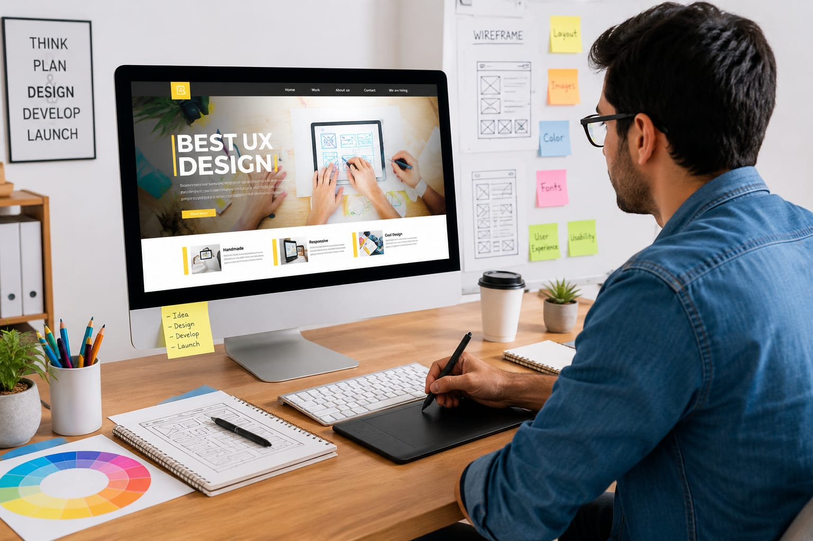

💻 Website Designer
🖥️ What Do They Do?
- You open a website to buy products, or read information.
- The pages look clean and attractive.
- The buttons, colors, pictures, and layout help you understand everything quickly.
- Someone carefully planned and designed that website for users.
- That person is called a Website Designer. 👉 In simple words: Website Designers create websites that look attractive and are easy for people to use.

🎓 How to Become a Website Designer
After completing 10th, students can start learning website creation, design basics, layouts, colors, and digital creativity through diploma or certificate courses.
Diploma in Web Designing
Duration: 1 – 2 Years
Eligibility: Class 10 pass
Exam: Merit-based or institutional interview
Certificate Course in Web Designing
Duration: 3 – 6 Months
Eligibility: Class 10 pass
Exam: Direct admission
Diploma in Web Designing & Development
Duration: 2 Years
Eligibility: Class 10 pass
Exam: Institutional entrance test
📝 Exam Details
(Click on the exam name to see full details)
Institutional Entrance Test Interview Selection Direct AdmissionNote: Students can later move into advanced website design, UI/UX, front-end development, or digital product design courses through higher studies.
After completing 12th, students can join professional degree courses related to website design, digital interfaces, multimedia, and front-end development.
B.Sc in Multimedia and Web Design
Duration: 3 Years
Eligibility: 10+2 Pass (Any stream)
Exam: CUET / University Specific Entrance
Bachelor of Design (B.Des) in Interaction Design
Duration: 4 Years
Eligibility: 10+2 Pass (Any stream)
Exam: UCEED / NID DAT / SEED
B.Voc in Web Design & Development
Duration: 3 Years
Eligibility: 10+2 Pass
Exam: Merit-based / University Entrance
📝 Exam Details
(Click on the exam name to see full details)
CUET UCEED NID DAT SEED Exam University Entrance ExamNote: Students can later specialize in UI/UX design, front-end development, interaction design, digital product design, or website development through higher studies and practical experience.
After graduation, students can specialize in advanced website design, interaction design, digital experiences, and user-centered product development through postgraduate courses.
M.Sc in E-Commerce & Web Design
Duration: 2 Years
Eligibility: Graduation (B.Sc, BCA, or B.Des preferred)
Exam: University Entrance Exam
Post Graduate Diploma in Web Designing (PGDWD)
Duration: 1 – 2 Years
Eligibility: Graduation in any field
Exam: Portfolio Review & Interview
M.Des in Interaction Design
Duration: 2 Years
Eligibility: Graduation (B.Des / B.Tech / BFA)
Exam: CEED / NID DAT
📝 Exam Details
(Click on the exam name to see full details)
CEED NID DAT Portfolio Review Interview Selection University Entrance ExamNote: These higher studies help students move into advanced roles such as UI/UX Designer, Interaction Designer, Product Designer, Creative Director, or Digital Experience Specialist.
Some students become Website Designers by learning practical skills online, building projects, and creating their own websites and portfolios without following a traditional degree path.
Professional Web Design Certification (HTML, CSS, JS Focus)
Duration: 4 – 6 Months
Eligibility: Open to all
Exam: Capstone Project / Portfolio Assessment
WordPress & CMS Specialist Certification
Duration: 2 – 3 Months
Eligibility: Open to all
Exam: Live Site Launch Assessment
Front-End Development Bootcamp
Duration: 3 – 8 Months
Eligibility: Basic computer knowledge
Exam: Real Website Project Submission
📝 Skill Assessment Details
(Click on the assessment name to see full details)
Portfolio Assessment Capstone Project Live Site Launch Assessment Project SubmissionNote: In the self-taught route, strong portfolios, creativity, practical projects, and real website-building experience are often more important than formal degrees.
(Age limits, marks, and admission process may vary depending on the college or state. These courses are available in many colleges and universities across India. You can choose colleges based on your location, budget, and entrance exams.)
🏫 Top Colleges
(Click on the college to know the details)
After 10th
Government Polytechnic, Ghaziabad Zee Institute of Creative Art (ZICA), Pune South Delhi Polytechnic for Women Vogue Institute of Art and Design, BangaloreImagine you are working as a Website Designer in a creative company.
A small business wants a modern website for customers.
Your job is to make the website attractive, simple, and easy to use.
First you plan the layout of the homepage, menus, and sections.
You choose colors, fonts, images, and styles for the website.
You design pages that work smoothly on phones, tablets, and computers.
Finally, you create a beautiful website that people enjoy using.
If this excites you, then this career may suit you.
Where do Website Designers work? (Job Roles + Growth)
These are some roles you can explore in Website Design.
You usually start with beginner roles and grow with experience.
🔵 Beginner Roles
Junior Web Designer
After Diploma / B.Sc / B.Voc
Designs basic website layouts, banners, buttons, and simple user-friendly web pages.
Web Design Intern
Currently pursuing B.Des / B.Sc / Certification
Supports teams by updating webpages, resizing images, and helping senior designers.
Front-End Assistant
After 10th/12th + HTML/CSS Certification
Uses HTML and CSS to build menus, buttons, and responsive website sections.
🔵 Mid-Level Roles
UI Designer (Web)
After B.Des / B.Sc + Experience
Designs the visual style, colors, typography, and layout of modern websites.
WordPress / CMS Developer
After Diploma / B.Sc + Platform Skills
Builds websites using platforms like WordPress or Shopify for businesses and clients.
Interaction Designer
After B.Des / B.Tech + Experience
Creates animations, transitions, and interactive website experiences.
🟣 Advanced Roles
Web Design Lead
After Graduation + 6+ Years Experience
Leads design teams, manages projects, and works with clients to create complete websites.
UX Strategist
After M.Des / MBA + Leadership Experience
Studies how users behave on websites and plans better user journeys and layouts.
Creative Director (Digital)
After M.Des / BFA + 10+ Years Experience
Decides the creative vision and overall artistic direction of large digital projects.
International Tech Companies
Work for companies like Google, Amazon, Microsoft, or Adobe.
Digital Marketing Agencies
Create landing pages, promotional websites for international brands.
E-commerce Development
Design online shopping websites and improve customer experiences.
FinTech and Banking
Build secure payment apps, banking websites, and money transfer platforms.
Gaming and Entertainment Industry
Create game interfaces, streaming platforms, and interactive experiences.
Remote Freelancing
Work independently for international clients through platforms like Upwork and Fiverr.
(Click Yes or No for each question)
1. Do you like designing or drawing things creatively?
2. Have you ever noticed the design of a website while using it?
3. Have you ever felt that a website or app was confusing to use?
4. When using a website or app, have you ever felt the colors did not look good?
5. Do you like exploring new apps or websites just to see how they look and work?